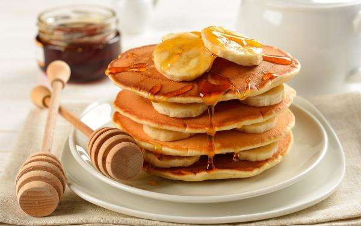
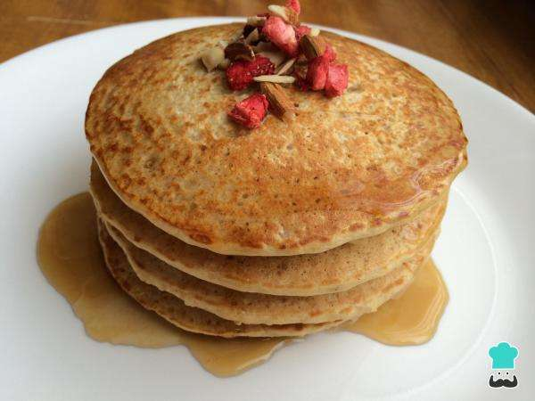

Café da manhã Fit
Panqueca americana com banana e mel

Ingredientes para Panqueca americana com banana e mel
- 8 unidades de banana;
- 3 unidades de ovos;
- 250 mililitros de leite;
- 1 xícara de aveia;
- 1 pitada de canela em pó;
- 1 pitada de essência de baunilha;
- 150 mililitros de mel;
- 1 colher de sopa de açúcar (opcional);
Como preparar Panqueca americana com banana e mel
Para preparar esta receita de panqueca americana com banana e melcomece por reunir os ingredientes necessários.
Bata no liquidificador ou com um mixer a aveia, o leite e as bananas descascadas e cortadas em pedaços médios.
Adicione a canela em pó e a essência de baunilha a esta massa da panqueca americana com banana e mel, e volte a bater.
Neste passo, se quiser adicione o açúcar. Lembre-se que a banana é uma fruta doce e que no final as panquecas serão regadas com mel, pelo que este é um ingrediente dispensável. Reserve a massa na geladeira por 10-15 minutos, para que se torne mais consistente.
Após o passo anterior, cozinhe uma porção da massa da panqueca americana com banana e melnuma frigideira quente com um pouco de manteiga. Quando a panqueca se apresentar cozinhada de lado, vire ao contrário para cozinhar do outro lado.
Quando estiver cozinhada dos dois lados, retire a panqueca para um prato e repita até esgotar toda a massa.
Sirva a panqueca americana com banana e mel ainda quente, decorada com rodelas de banana e regada com mel, tal como na fotografia. Esta é uma ótima receita para o café da manhã ou lanche, bom apetite!
Panqueca de aveia light

Ingredientes para Panqueca de aveia light
- 1 xícara de aveia em flocos;
- ½ xícara de leite desnatado;
- 1 unidade de ovo;
- 1 colher de café de adoçante a seu gosto;
- 1 colher de sopa de margarina;
- 1 colher de chá de essência de baunilha sem açúcar;
- 1 colher de café de bicarbonato de sódio;
- 1 pitada de canela em pó;
Como preparar a para Panqueca de aveia light;
Em um processador de alimentos ou liquidificador adicione os flocos de aveia e triture uns minutos até obter uma farinha.
Coloque a aveia em uma tigela e misture com o ovo e o leite até obter uma massa homogênea.
De seguida acrescente os restantes ingredientes: a essência de baunilha, a canela em pó, o adoçante e o bicarbonato e misture bem.
Derreta a margarina em uma frigideira em fogo médio-baixo e adicione um pouco da mistura de panquecas. Quando a panqueca ficar consistente nas laterais, vire e cozinhe do outro lado por mais 30 segundos. Retire para um prato ou grelha e repita com a massa restante.
Coloque as panquecas de aveia light sobrepostas, acrescente um pouco de mel e decore com um algumas amêndoas e morangos desidratados (opcional). Esta é uma sugestão rica em fibra para o seu café da manhã, por isso não hesite em preparar.